| Sample_1880 | Sample_1881 | Sample_1882 | Sample_1883 | Sample_1884 | |
|---|---|---|---|---|---|
| Prevotella_copri | 0.03 | 3.80 | 0.00 | 26.83 | 30.02 |
| Faecalibacterium_prausnitzii | 38.39 | 5.00 | 7.79 | 2.02 | 15.27 |
| Bacteroides_stercoris | 0.00 | 0.00 | 1.19 | 2.31 | 0.01 |
| Subdoligranulum_unclassified | 3.10 | 9.31 | 11.51 | 4.03 | 1.83 |
| Bacteroides_vulgatus | 0.23 | 2.38 | 0.65 | 0.42 | 0.22 |
A robust pipeline for statistical metagenomic data analysis
MISO Master Project | Metagenomics
Introduction
Metagenomic Challenge
Goal: Building a reproducible pipeline ➔ reliable conclusions on microbial interaction from metagenomic data.
Data : Bacteria population abundance from patient’s gut microbiome with differing diseases
Problem from microbiome sequencing :
- High dimensionnality
- Sparsity
- Compositionality
Dataset Structure
All analyses were performed using the phyloseq framework, integrating three essential matrices into a single metagenomics object:
Counts/proportions of each taxon across samples.
Clinical context and patient variables used for group comparisons
| age | gender | disease | country | |
|---|---|---|---|---|
| Sample_1880 | 34 | female | ibd_ulcerative_colitis | spain |
| Sample_2485 | 45 | female | cirrhosis | china |
| Sample_3063 | 53 | female | t2d | china |
| Sample_3480 | 67 | male | cancer | france |
Biological identification for each OTU.
| Kingdom | Phylum | Class | Order | Family | |
|---|---|---|---|---|---|
| Actinomyces_graevenitzii | Bacteria | Actinobacteria | Actinobacteria | Actinomycetales | Actinomycetaceae |
| Bacteroides_barnesiae | Bacteria | Bacteroidetes | Bacteroidia | Bacteroidales | Bacteroidaceae |
| Granulicatella_unclassified | Bacteria | Firmicutes | Bacilli | Lactobacillales | Carnobacteriaceae |
| Fusobacterium_gonidiaformans | Bacteria | Fusobacteria | Fusobacteriia | Fusobacteriales | Fusobacteriaceae |
| Burkholderiales_bacterium_1_1_47 | Bacteria | Proteobacteria | Betaproteobacteria | Burkholderiales | Burkholderiales_noname |
Data preparation
1. Quality control
- Missing values : avoid analysis bias
- Distribution of sequencing depth = nb of reads/sample
. . .
bp_seq_depth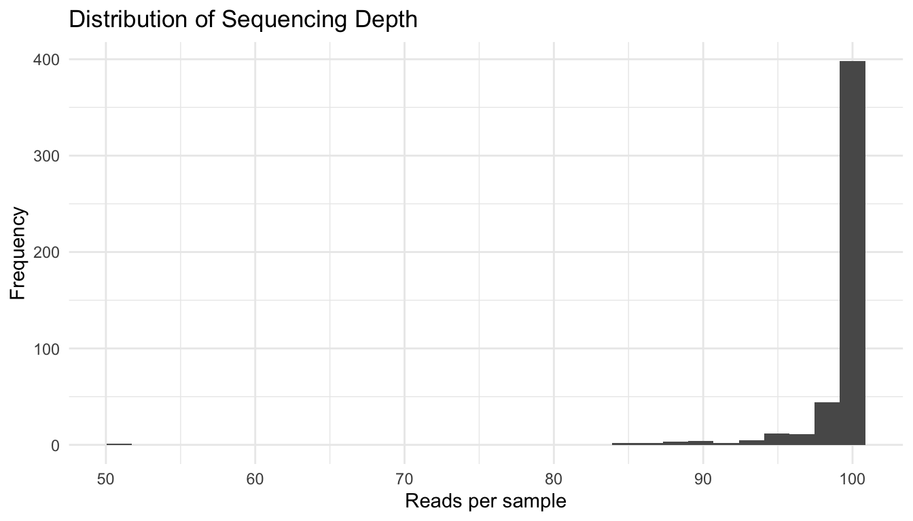
Allows the identifaction of outliers + normalisation
2. Data Overview
Sample distribution
Sample_dist_gender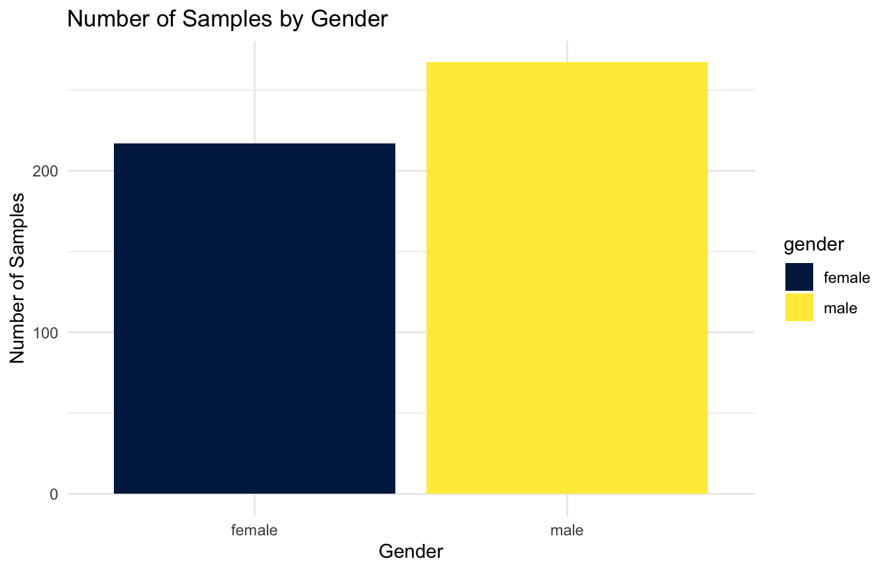
SampleM_dist_disease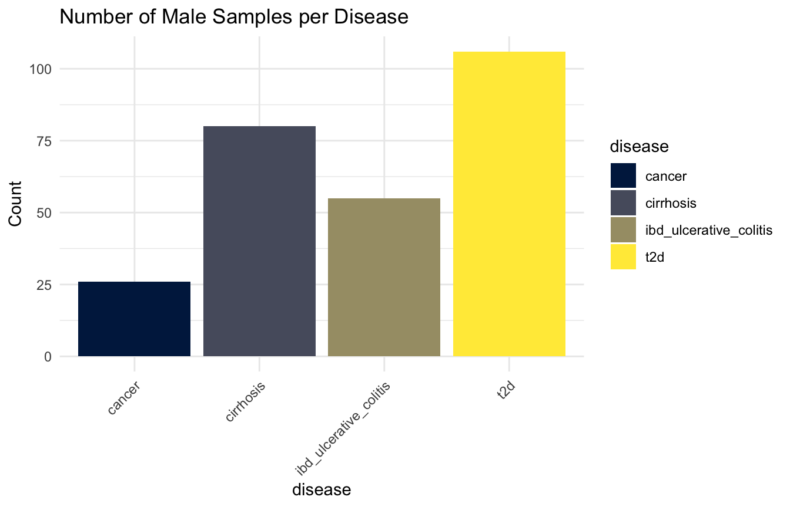
SampleF_dist_disease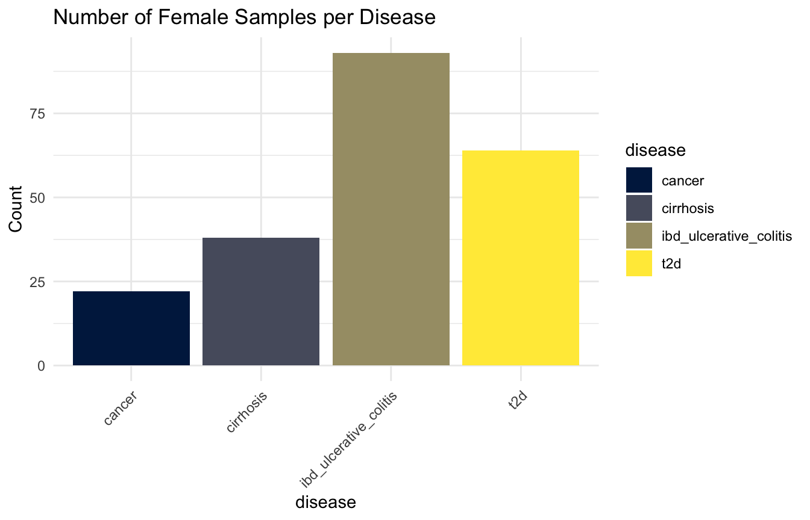
2. Data Overview
Taxonomic composition
Top10b_disease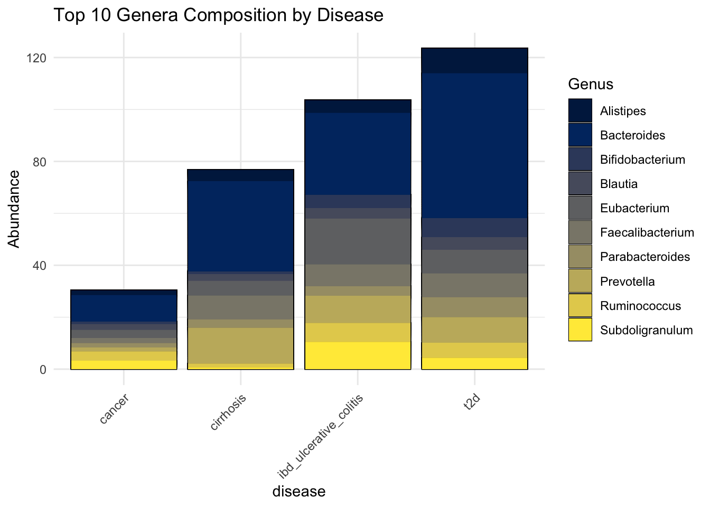
➔ Roughly same microbial compositions, differing proportions, also depending on the nb of samples
Diversity analysis
1. Alpha diversity
Alpha diversity measures the diversity within a single sample. It can reflect both:
- Richness: the number of taxa present
- Evenness: the distribution of abundances among taxa
. . .
Several metrics can be used, we chose 4: Observed, Shannon, Simpson and Inverted Simpson
Overview of the Alpha diversity
Alpha diversity in details
Unique OTUs present per diseases
p_observed
Mesure the richness and evenness of species in a community
p_shannon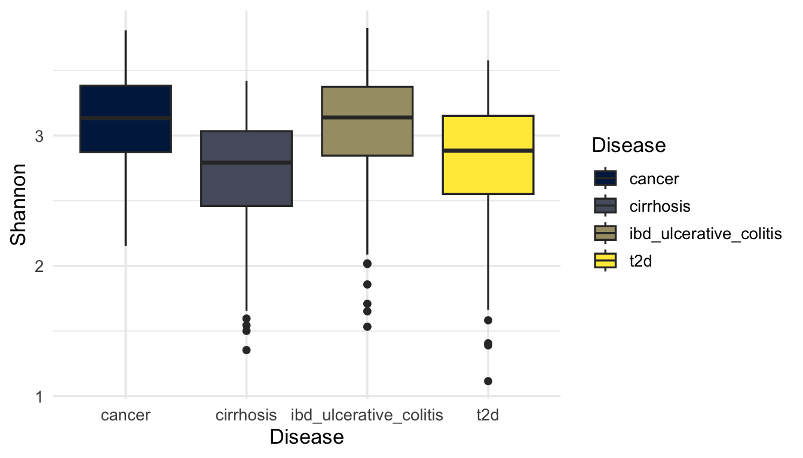
Probability : two random individuals from a community belong to the same species
p_simpson
Reciprocal of the Simpson = emphasize the importance of rare species in a community
p_invsimpson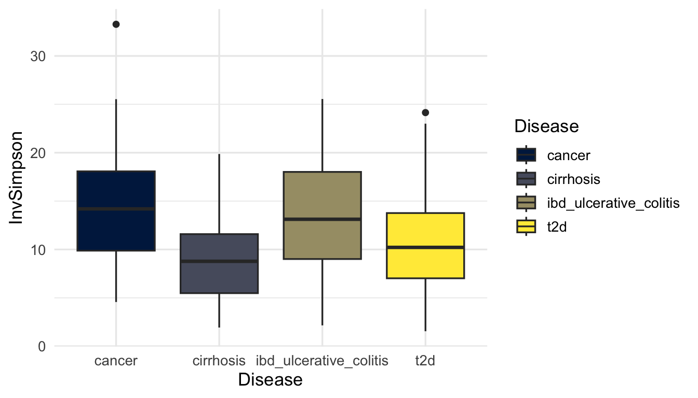
All of those differences in diversity needs to be statistically significant
Statistical analysis
Assess the normality = Shapiro test
knitr::kable(shapiro_table,
digits = 4, # Arrondir les p-values à 4 décimales
)| statistic | p.value | method | Metric |
|---|---|---|---|
| 0.9491 | 0e+00 | Shapiro-Wilk normality test | Shannon |
| 0.7580 | 0e+00 | Shapiro-Wilk normality test | Simpson |
| 0.9773 | 0e+00 | Shapiro-Wilk normality test | InvSimpson |
| 0.9867 | 2e-04 | Shapiro-Wilk normality test | Observed |
➔ p-value < 0.05 = reject the normality ➔ Non parametric test
Assess the significant differences in microbial diversity across disease groups = Kruskal-Wallis test
knitr::kable(kw_table,
digits = 4,
)| statistic | p.value | parameter | method | Metric |
|---|---|---|---|---|
| 65.3548 | 0 | 3 | Kruskal-Wallis rank sum test | Shannon |
| 57.5800 | 0 | 3 | Kruskal-Wallis rank sum test | Simpson |
| 57.5800 | 0 | 3 | Kruskal-Wallis rank sum test | InvSimpson |
| 48.6511 | 0 | 3 | Kruskal-Wallis rank sum test | Observed |
➔ p-value < 0.05 = difference somewhere among the groups
KW = difference somewhere among the groups ➔ post-hoc pairwise comparisons to see which groups differ
PW_Wilcox_sorted <- PW_Wilcox_table[order(PW_Wilcox_table[[4]], decreasing = TRUE), ]
PW_Wilcox_extremes <- rbind(head(PW_Wilcox_sorted, 2), tail(PW_Wilcox_sorted, 2))
knitr::kable(PW_Wilcox_extremes,
digits = 4,
row.names = FALSE,
col.names = c("Metric", "Group A", "Group B", "P-value (BH)"))| Metric | Group A | Group B | P-value (BH) |
|---|---|---|---|
| cirrhosis | cancer | 0.0000 | Simpson |
| ibd_ulcerative_colitis | cancer | 0.8046 | Simpson |
| t2d | cirrhosis | 0.0107 | InvSimpson |
| t2d | ibd_ulcerative_colitis | 0.0000 | InvSimpson |
- p-value < 0.05 = significative difference in diversity beetween the 2 communities
- p-value > 0.05 = no significative difference
2. Beta diversity
Beta diversity measures differences in microbial composition between samples.
We used 2 metrics :
Bray-Curtis : Considers both the microbial communitites presence/absence and relative abundance beetween samples
Jaccard : Considers only presence/absence.
. . .
To visualise those dispersions, we used PCoA
2. Beta diversity
p_bray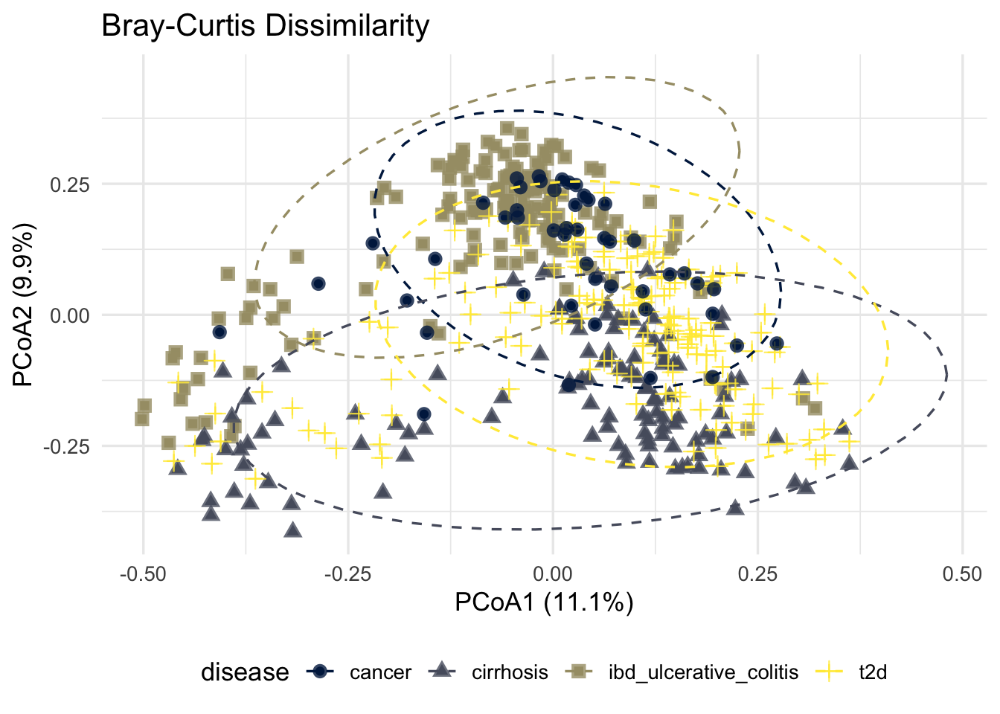
p_jaccard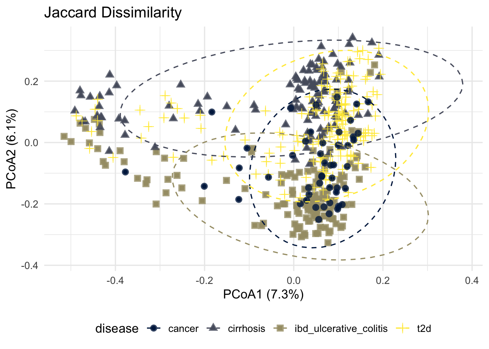
Statistical Analysis
Needed to verify the homogeneity of multivariate dispersions
disp_results <- data.frame(
Metric = c("Bray-Curtis", "Jaccard"),
F_value = c(disp_test_bray$tab$F[1], disp_test_jaccard$tab$F[1]),
P_value = c(disp_test_bray$tab$`Pr(>F)`[1], disp_test_jaccard$tab$`Pr(>F)`[1])
)
knitr::kable(disp_results,
digits = 3, # Arrondit à 3 décimales pour un affichage propre
col.names = c("Distance Metric", "F-value", "P-value (999 perms)"))| Distance Metric | F-value | P-value (999 perms) |
|---|---|---|
| Bray-Curtis | 18.158 | 0.001 |
| Jaccard | 18.513 | 0.001 |
➔ p-value < 0.05 = heterogeneity in the groups multivariate dispersion
Asses whether the centroids of the groups (disease status) are significantly different
perm_result <- data.frame(
Metric = c("Bray-Curtis", "Jaccard"),
R2_percent = c(
round(permanova_bray[1, "R2"] * 100, 2),
round(permanova_jaccard[1, "R2"] * 100, 2)
),
F_value = c(permanova_bray[1, "F"], permanova_jaccard[1, "F"]),
P_value = c(permanova_bray[1, "Pr(>F)"], permanova_jaccard[1, "Pr(>F)"])
)
knitr::kable(perm_result,
digits = 3,
col.names = c("Distance Metric", "Variation Explained (R² %)", "F-value", "P-value"))| Distance Metric | Variation Explained (R² %) | F-value | P-value |
|---|---|---|---|
| Bray-Curtis | 8.69 | 15.235 | 0.001 |
| Jaccard | 5.55 | 9.408 | 0.001 |
➔ p-value < 0.05 = Significant differences in community structure
➔ R2 Bray-Curtis > R2 Jaccard = abundance differences are more discriminative than just presence/absence
Tuckey tests to see which diseases induce the variance heterogeneity
# Bray-Curtis table
bray_tab <- data.frame(
Comparison = names(pairwise_bray$pairwise$observed),
Observed_Difference = pairwise_bray$pairwise$observed,
P_value = pairwise_bray$pairwise$permuted,
Distance = "Bray-Curtis"
)
# Jaccard table
jaccard_tab <- data.frame(
Comparison = names(pairwise_jaccard$pairwise$observed),
Observed_Difference = pairwise_jaccard$pairwise$observed,
P_value = pairwise_jaccard$pairwise$permuted,
Distance = "Jaccard"
)
# Combine and display with kable
library(knitr)
combined_table <- rbind(bray_tab, jaccard_tab)
kable(combined_table,
caption = "Pairwise comparisons of multivariate dispersions (permutest.betadisper)",
col.names = c("Comparison", "Observed diff.", "p-value", "Distance"),
digits = 4,
booktabs = TRUE)| Comparison | Observed diff. | p-value | Distance | |
|---|---|---|---|---|
| cancer-cirrhosis | cancer-cirrhosis | 0.1871 | 0.187 | Bray-Curtis |
| cancer-ibd_ulcerative_colitis | cancer-ibd_ulcerative_colitis | 0.0136 | 0.018 | Bray-Curtis |
| cancer-t2d | cancer-t2d | 0.0309 | 0.028 | Bray-Curtis |
| cirrhosis-ibd_ulcerative_colitis | cirrhosis-ibd_ulcerative_colitis | 0.0000 | 0.001 | Bray-Curtis |
| cirrhosis-t2d | cirrhosis-t2d | 0.3025 | 0.273 | Bray-Curtis |
| ibd_ulcerative_colitis-t2d | ibd_ulcerative_colitis-t2d | 0.0000 | 0.001 | Bray-Curtis |
| cancer-cirrhosis1 | cancer-cirrhosis | 0.2200 | 0.238 | Jaccard |
| cancer-ibd_ulcerative_colitis1 | cancer-ibd_ulcerative_colitis | 0.0148 | 0.015 | Jaccard |
| cancer-t2d1 | cancer-t2d | 0.0214 | 0.025 | Jaccard |
| cirrhosis-ibd_ulcerative_colitis1 | cirrhosis-ibd_ulcerative_colitis | 0.0000 | 0.001 | Jaccard |
| cirrhosis-t2d1 | cirrhosis-t2d | 0.1970 | 0.188 | Jaccard |
| ibd_ulcerative_colitis-t2d1 | ibd_ulcerative_colitis-t2d | 0.0000 | 0.001 | Jaccard |
➔ Pairwise comparisons revealed that the IBD group had significantly different multivariate dispersion compared to all other diseases (p < 0.05 for all comparisons)
Metagenomic networks analysis
How microbial populations reorganize, compete, or cooperate depending on the host’s disease.
We used a consensus network approach :
SpiecEasi (MB): Meinshausen-Bühlmann Neighborhood Selection = Node to node interactions
SpiecEasi (Glasso): Graphical Lasso = Global estimation
SparCC: Sparse Correlations for Compositional Data = global correlations
. . .
An interaction is validates if confirmed by 2 of 3 methods
We tested 3 taxonomic levels : Phylum, Family and Genus
1. Phylum Level
plot(Network_phylum,
layout = layout_with_fr(Network_phylum),
vertex.size = 8,
vertex.color = "lightgrey",
vertex.frame.color = "white",
vertex.label.color = "black",
vertex.label.cex = 0.7,
edge.color = E(Network_phylum)$color, # Récupère les couleurs sauvegardées
edge.width = 1.5,
main = "Global Consensus Multi-Disease Network - Phylum")
legend_data <- unique(data.frame(
Disease = E(Network_phylum)$Disease,
Color = E(Network_phylum)$color
))
legend("bottomright",
title = "Disease",
legend = legend_data$Disease,
col = legend_data$Color,
lwd = 3, # Épaisseur du trait dans la légende
bty = "n", # "n" pour ne pas dessiner de boîte moche autour de la légende
cex = 0.8) # Taille du texte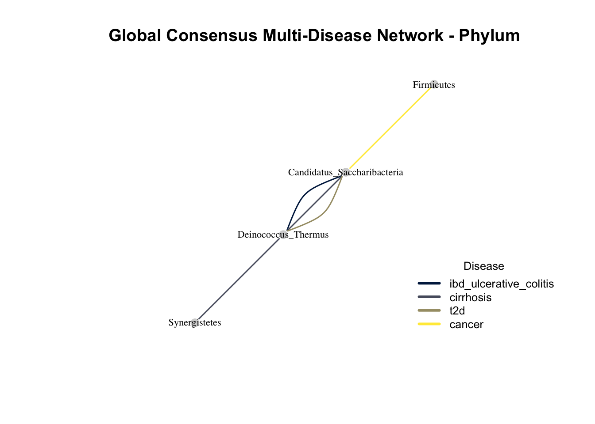
print_network_stats <- function(network_list, tax_level) {
stats_df <- do.call(rbind, lapply(names(network_list), function(g) {
net <- network_list[[g]]
if(is.null(net)) return(NULL)
data.frame(
Tax_Level = tax_level,
Disease_Cohort = g,
Nodes_Count = vcount(net),
Edges_Count = ecount(net),
Graph_Density = round(edge_density(net), 3),
Average_Degree = round(mean(degree(net)), 2)
)
}))
return(stats_df)
}- Low edge count (interactions)
- Very low density
➔ grouping of populations, lack of resolution
2. Family Level
degres_famille <- degree(Network_family)
seuil_top10 <- sort(degres_famille, decreasing = TRUE)[10]
labels_hubs_fam <- rep("", vcount(Network_family))
tailles_noeuds_fam <- rep(4, vcount(Network_family))
labels_hubs_fam[degres_famille >= seuil_top10] <- V(Network_family)$name[degres_famille >= seuil_top10]
tailles_noeuds_fam[degres_famille >= seuil_top10] <- 8
set.seed(42)
layout_famille <- layout_with_kk(Network_family)
plot(Network_family,
layout = layout_famille,
vertex.size = tailles_noeuds_fam,
vertex.color = ifelse(degres_famille >= seuil_top10, "gold", "lightgrey"),
vertex.frame.color = "white",
vertex.frame.width = 0.5,
vertex.label = labels_hubs_fam,
vertex.label.color = "black",
vertex.label.cex = 0.5,
vertex.label.font = 1,
vertex.label.dist = 0.8,
edge.color = E(Network_family)$color,
edge.width = 0.8,
main = "Global Consensus Multi-Disease Network - Family (Top Hubs Highlighted)")
legend_data <- unique(data.frame(
Disease = E(Network_family)$Disease,
Color = E(Network_family)$color
))
legend("bottomright",
title = "Disease",
legend = legend_data$Disease,
col = legend_data$Color,
lwd = 3, # Épaisseur du trait dans la légende
bty = "n", # "n" pour ne pas dessiner de boîte moche autour de la légende
cex = 0.8) # Taille du texte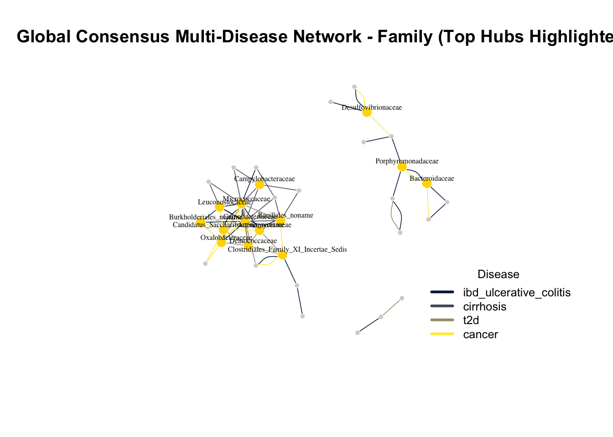
print_network_stats <- function(network_list, tax_level) {
stats_df <- do.call(rbind, lapply(names(network_list), function(g) {
net <- network_list[[g]]
if(is.null(net)) return(NULL)
data.frame(
Tax_Level = tax_level,
Disease_Cohort = g,
Nodes_Count = vcount(net),
Edges_Count = ecount(net),
Graph_Density = round(edge_density(net), 3),
Average_Degree = round(mean(degree(net)), 2)
)
}))
return(stats_df)
}
#| echo: false
knitr::kable(print_network_stats(networks_family, "Family"))| Tax_Level | Disease_Cohort | Nodes_Count | Edges_Count | Graph_Density | Average_Degree |
|---|---|---|---|---|---|
| Family | ibd_ulcerative_colitis | 34 | 24 | 0.043 | 1.41 |
| Family | cirrhosis | 37 | 14 | 0.021 | 0.76 |
| Family | t2d | 36 | 16 | 0.025 | 0.89 |
| Family | cancer | 37 | 16 | 0.024 | 0.86 |
- Increase in nodes and edges
- Optimal graph density
➔ Network architecture = specific to each diseases
3. Genus Level
degres_genre <- degree(Network_genus)
seuil_top15 <- sort(degres_genre, decreasing = TRUE)[15]
labels_hubs <- rep("", vcount(Network_genus))
tailles_noeuds <- rep(4, vcount(Network_genus))
labels_hubs[degres_genre >= seuil_top15] <- V(Network_genus)$name[degres_genre >= seuil_top15]
tailles_noeuds[degres_genre >= seuil_top15] <- 6
set.seed(42)
layout_genre <- layout_with_graphopt(Network_genus)
plot(Network_genus,
layout = layout_genre,
vertex.size = tailles_noeuds, # Taille dynamique (gros pour hubs, petit pour le reste)
vertex.color = ifelse(degres_genre >= seuil_top15, "gold", "lightgrey"), # Les hubs en doré !
vertex.frame.color = "white",
vertex.frame.width = 0.2,
vertex.label = labels_hubs, # Seulement les 15 noms apparaissent
vertex.label.color = "black",
vertex.label.cex = 0.5, # Texte bien lisible
vertex.label.font = 1, # Texte en gras pour faire ressortir les hubs
vertex.label.dist = 0.8, # Décale le texte
edge.color = E(Network_genus)$color, # Bien utiliser les couleurs du genre
edge.width = 0.3, # Liens extrêmement fins pour voir à travers
main = "Global Consensus Multi-Disease Network - Genus (Top Hubs Highlighted)")
legend_data <- unique(data.frame(
Disease = E(Network_genus)$Disease,
Color = E(Network_genus)$color
))
legend("bottomright",
title = "Disease",
legend = legend_data$Disease,
col = legend_data$Color,
lwd = 3, # Épaisseur du trait dans la légende
bty = "n", # "n" pour ne pas dessiner de boîte moche autour de la légende
cex = 0.8) # Taille du texte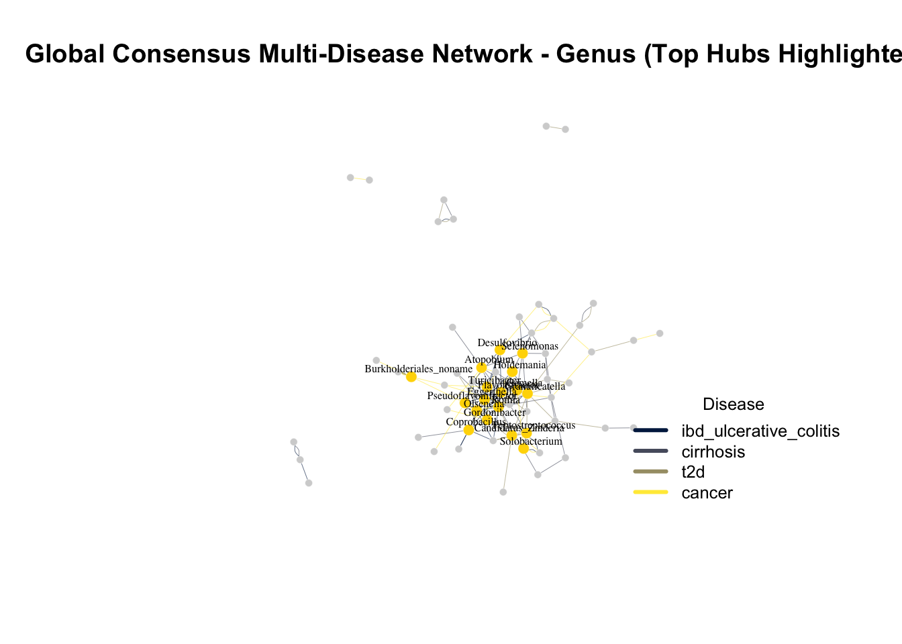
print_network_stats <- function(network_list, tax_level) {
stats_df <- do.call(rbind, lapply(names(network_list), function(g) {
net <- network_list[[g]]
if(is.null(net)) return(NULL)
data.frame(
Tax_Level = tax_level,
Disease_Cohort = g,
Nodes_Count = vcount(net),
Edges_Count = ecount(net),
Graph_Density = round(edge_density(net), 3),
Average_Degree = round(mean(degree(net)), 2)
)
}))
return(stats_df)
}
#| echo: false
knitr::kable(print_network_stats(networks_genus, "Genus"))| Tax_Level | Disease_Cohort | Nodes_Count | Edges_Count | Graph_Density | Average_Degree |
|---|---|---|---|---|---|
| Genus | ibd_ulcerative_colitis | 64 | 46 | 0.023 | 1.44 |
| Genus | cirrhosis | 70 | 31 | 0.013 | 0.89 |
| Genus | t2d | 64 | 34 | 0.017 | 1.06 |
| Genus | cancer | 73 | 29 | 0.011 | 0.79 |
- Too much nodes and edges
- Decreasing density
➔ Topological collapse = a lot of fragmentation
Conclusion: A Robust Bioinformatics Pipeline
- End-to-End Reproducibility: Seamless integration of metadata, taxonomy, and OTU counts within the
phyloseqframework. - Statistical Rigor: Addressed inherent metagenomic biases (sparsity, zero-inflation, compositionality) via Centered Log-Ratio (CLR) transformations and non-parametric testing.
- Consensus Network Inference: Mitigated algorithmic artifacts and false positives by enforcing a strict majority vote across three distinct methodologies (SPIEC-EASI MB, SPIEC-EASI Glasso, and SparCC).
- Scalable Architecture: Delivered a fully automated, version-controlled analytical environment using R,
igraph, and Quarto.